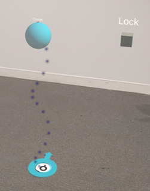

Room Setup
This page covers Anchor placement in detail, including first-time setup, joining from additional devices, and rejoining an existing room.
Finding an Existing Room
If a room has already been set up by someone else in your organization:
- From the Portal homepage, select Rooms → Manage Rooms
-
Find and select the room you want to join from the list
Warning
This list contains all rooms in your organization. Do not delete or edit rooms that belong to other users.
-
Click Show QR Code from the operations menu to retrieve the QR code and 6-digit code for that room
First-Time Anchor Placement
The first device to join a new room is responsible for placing the Anchor for everyone. Subsequent devices skip to Joining from Additional Devices.
Scan the Room
- Look around the room — blue dots will appear on nearby surfaces
- Walk around until blue dots cover the walls, floor, and furniture
- Grab the green "Yes" cube when the scan is complete
No blue dots appearing?
Your device may not support room scanning. Grab the red "No, Place Center Manually" cube instead — this lets you place the Anchor for your device only. The next device to join will place the Anchor for everyone.
Place the Anchor

- Locate the unlocked Anchor — a floating sphere above a circular marker on the floor
- Grab the sphere and drag it to your desired position in the room
- Grab the grey "Lock" cube to confirm placement
- When locked, only the circular floor Anchor remains (with a "Center" label and a 4-letter code)
Mark the Anchor Location
Place a physical marker — a sticker, piece of tape, or printed label — on the floor directly under the holographic Anchor. Point the arrow on your marker in the same direction as the holographic arrow.
This marker helps future users and additional devices confirm correct alignment.
Joining from Additional Devices
After the Anchor is placed by the first device, other devices follow this process.
Automatic Alignment
Some devices only need to complete this once, the first time they join a room:
- HoloLens
- Meta Quest
- Apple Vision Pro
Other devices must complete this every session, or place manually:
- XReal
- Mobile devices
Steps:
- Scan the room — look around until blue dots cover all surfaces
- If no blue dots appear, select the red "Place Manually" cube and follow Manual Placement below
- Grab the green "Yes" cube when complete
- Set floor level — confirm the blue target is on the floor, or drag the sphere to adjust
- Wait for [App] to align the room automatically
- Confirm Anchor placement — look for blue particles to locate the Anchor
- If correct: grab the green "Yes" cube
- If incorrect: return to scan, or use manual placement
- Once confirmed, only the circular floor Anchor with its name and 4-letter code will remain
Manual Placement
Use this if automatic alignment fails or your device cannot scan the room.
- Locate the unlocked Anchor (floating sphere above the circular floor marker)
- Grab the sphere and drag it to align with the physical floor marker in your room
- Make sure the holographic arrow matches the direction of your floor marker
- Grab the grey "Lock" cube to confirm
Rejoining a Room
Some headsets (HoloLens, Meta Quest, Apple Vision Pro) remember Anchor placement between sessions. When you rejoin, the locked Anchor should appear automatically in its last known position.
If the Anchor position looks incorrect, use the Anchor Menu to reposition it. See The Anchor Menu for details.